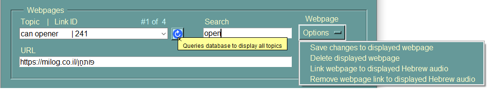

Webpages Frame

Mouse < Right-click > in any text box invokes
the text editor popup-menu.
Topic Combo Box
List of the webpage topics in the database.
Upon selection of a topic displays the topic's URL.
Mouse < Right-click > searches the English field of the audio
database table for text matching the topic or the highlighted
portion of the topic text and populates the Audio frame's Audio
combo box with the results.
< Control-d > searches the Doitinhebrew.com website for the
Hebrew translation of the topic text.
Retrieves all the webpage topics in the database and
populates the Topic combo box with the results.
URL Text Box
URL of the selected topic in the TOPIC combo box.
Mouse < Left-click > displays the URL's webpage in the
browser.
Search Text Box
Searches the Topic column of the webpage database table
for matching text and populates the Topic combo box with
the results.
< Return > executes search
Webpage Options Menu
Saves changes to the displayed Topic and its URL or deletes
the displayed Topic and its URL from the webpage database table.
Adds or removes the link between the the displayed topic and the
Audio currently displayed in the Audio frame's Audio combo box.
Whenever a selection is made in the Audio frame's Audio combo
box its links will populate the Topic combo box.
Create Hyperlink Button
Takes the Topic and URL fields and formats a hyperlink that
can be inserted into an Anki flashcard.